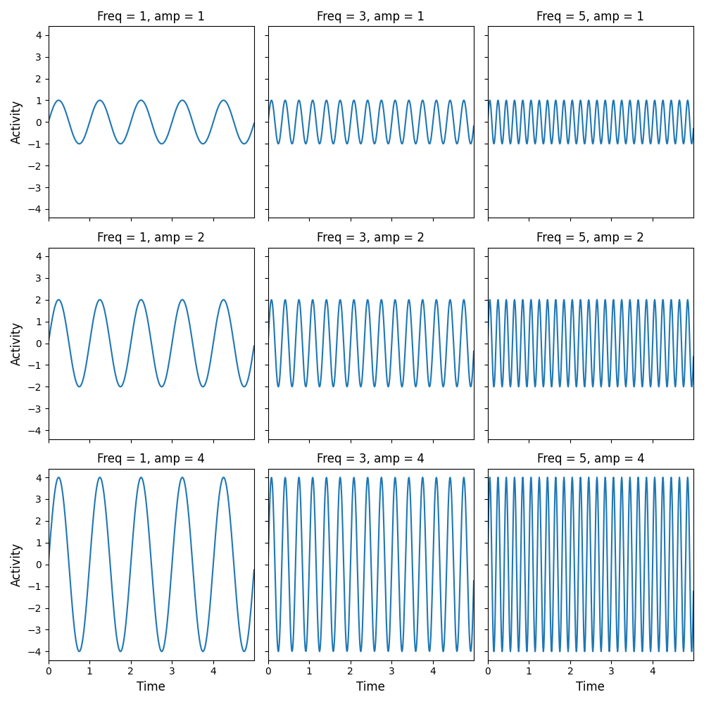

Introduction to Matplotlib (tutorial)¶
This notebook gives a short introduction to Matplotlib, Python’s most popular package for plotting. Although many different plotting packages exist in the Python ecosystem (see this talk for an overview), Matplotlib is arguably the most versatile and flexible. Here, we will give you a short tour of Matplotlib’s most important features.
Contents¶
The state-based approach
The object-oriented approach
Subplots (optional)
Most of the plotting functionality is contained in the subpackage pyplot, which is usually imported as follows:
import matplotlib.pyplot as plt # nice and short
Somewhat confusingly, Matplotlib has two interfaces for plotting: a state-based approach that mimicks Matlab’s way of plotting and a more “Pythonic” object-oriented approach. As Matplotlib recommends using the object-oriented approach, we will spend most time on this approach. But you’ll often see the state-based approach as well, so we’ll start with quickly discussing this approach.
The state-based approach¶
As mentioned, the state-based approach is a lot like the way plotting is done in Matlab: you call different functions that each take care of an aspect of the plot. In Matplotlib, most of these functions are contained in the pyplot package. Let’s create simple line plot to show how the state-based approach looks like:
x = [0, 1, 2, 3, 4, 5, 6]
y = [1, 2, 3, 4, 5, 6, 7]
plt.plot(x, y) # plot the data
plt.xlabel('x', fontsize=25) # set the x-axis label
plt.ylabel('y', fontsize=25) # set the y-axis label
plt.show() # this actually visualizes the plot

As you can see, the state-based approach entails a series of function calls (such as plt.plot and plt.xlabel). After you are done plotting, you just call plt.show and the plot will show in your notebook (or an external image viewer if you run it from a script). Note that, technically, the plt.show call is not necessary to render the plot in Jupyter notebooks, but we recommend doing it anyway as this is good practice.
The plt.plot function is perhaps the most basic function, which can be used to create any plot of paired datapoints (x, y). By default, it creates a line plot (as shown above), but the many (optional) parameters in plt.plot allow you to create many different variations! For example, instead of a line, we can plot the data as separate red points by specifying the format in the third argument (here, ‘o’ to indicate points) and the color (by setting the argument c, for color, to “red”):
plt.plot(x, y, 'o', c='red')
plt.show()

""" Implement the ToDo here. """
### BEGIN SOLUTION
plt.plot(x, y, 'D--g')
### END SOLUTION
# Do not remove the code below!
ax2check = plt.gca()
plt.show()

""" Tests the ToDo above. """
line = ax2check.get_lines()[0]
if not line._color in ['g', 'green']:
raise ValueError("The line is not green!")
if line._linestyle != '--':
raise ValueError("You didn't use a dashed line!")
if line._marker._marker != 'D':
raise ValueError("You didn't use a dashed line!")
print("Yay! Well done.")
Yay! Well done.
You can also plot multiple things within a single plot! Just call the plt.plot (or any other plotting function) multiple times. Below, we create a new variable (y_sq, the values of squared) and plot it in the same plot as our regular (x, y) plot. Importantly, we will include legend with the plot showing what each line represents using plt.legend:
y_sq = [yi ** 2 for yi in y] # check out this list comprehension!
plt.plot(x, y, '*b') # only plot markers (*) in blue
plt.plot(x, y_sq, '^--y') # plot both markers (^) and a line (--) in yellow
# Note that the plt.legend function call should come *after* the plotting calls
# and you should give it a *list* with strings
plt.legend(['y', 'y squared'])
plt.show()

As you can see, Matplotlib automatically creates the right legend! Make sure that the order of your labels (here: ['y', 'y squared']) matches the order of your plotting calls!
""" Implement your ToDo below. """
import math
z = [zi / 10 for zi in list(range(100))]
sin_z = [math.sin(zi) for zi in z]
cos_z = [math.cos(zi) for zi in z]
### BEGIN SOLUTION
plt.plot(z, sin_z)
plt.plot(z, cos_z)
plt.legend(["sin(z)", "cos(z)"])
### END SOLUTION
# Do not remove the code below and implement your code *above* this snippet
ax2check = plt.gca()
plt.show()

""" Tests the ToDo above. """
lines = ax2check.get_lines()
if len(lines) != 2:
raise ValueError(f"I expected 2 lines but found {len(lines)}!")
leg = ax2check.get_legend()
if leg is None:
raise ValueError("You didn't include a legend!")
n_leg = len(leg.get_lines())
if n_leg != 2:
raise ValueError("I expected two things in the legend but found {n_leg}!")
print("Good job!")
Good job!
There are several other things that you can add to or tweak in your plot. For example, you can add a title with plt.title or you can change the default ticks and tick labels using plt.xticks (for the x-axis ticks/tick labels) and plt.yticks (for the y-axis ticks/tick labels). An example:
plt.title("Plot with modified x-axis ticks and tick labels!", fontsize=14)
plt.plot(x, y)
plt.xticks([0, 2, 4, 6], ['0th', '2nd', '4th', '6th'])
plt.show()

And you can control the range of the axes by the functions plt.xlim and plt.ylim:
plt.plot(x, y)
plt.xlim(-5, 12)
plt.ylim(-5, 12)
plt.show()

Different plot functions¶
Of course, plt.plot is not the only plotting functions! There are many different plotting functions in Matplotlib, including scatterplots:
plt.title("A scatterplot!", fontsize=20)
# Note that this is equivalent to plt.plot(x, y, 'o') !
plt.scatter(x, y)
plt.show()

… and bar graphs:
# First argument determines the location of the bars on the x-axis
# and the second argument determines the height of the bars
plt.bar(x, x)
plt.show()

… and histograms:
# Let's generate some random data
import random
random_unif = [random.uniform(0, 1) for _ in range(100)]
plt.title("A histogram!", fontsize=20)
plt.hist(random_unif)
plt.xlabel("Value", fontsize=15)
plt.ylabel("Frequency", fontsize=15)
plt.show()

""" Implement the ToDo here! """
random_norm = [random.normalvariate(0.5, 0.15) for _ in range(100)]
### BEGIN SOLUTION
plt.hist(random_unif, alpha=0.5, bins=10)
plt.hist(random_norm, alpha=0.5, bins=10)
plt.legend(['uniform', 'normal'])
plt.xlabel("Value", fontsize=15)
plt.xticks([0, 0.1, 0.2, 0.3, 0.4, 0.5, 0.6, 0.7, 0.8, 0.9, 1.0],
[0, 0.1, 0.2, 0.3, 0.4, 0.5, 0.6, 0.7, 0.8, 0.9, 1.0])
plt.ylabel("Frequency", fontsize=15)
### END SOLUTION
# Do not remove the code below
ax2check = plt.gca()
plt.show()

""" Tests the ToDo above. """
import matplotlib
rect = [ch for ch in ax2check.get_children() if ch.__class__ == matplotlib.patches.Rectangle]
if len(rect) != 21:
raise ValueError(f"I expected 20 bins in total (10 per histogram), but found {len(rect) - 1}!")
if rect[0]._alpha != 0.5:
raise ValueError(f"The alpha level is not 0.5 (but {rect[0]._alpha})!")
leg = ax2check.get_legend()
if leg is None:
raise ValueError("I couldn't find a legend!")
if len(ax2check.get_xticks()) != 11:
raise ValueError("There should be 11 x-axis ticks and labels!")
if not all(ax2check.get_xticks() == [i / 10 for i in list(range(11))]):
raise ValueError("The x-axis ticks and tick labels are not yet correct ...")
print("Awesome!")
Awesome!
The object-oriented interface¶
The state-based plotting approach is easy to learn and pretty straightforward, but when you start creating more complex visualizations, you’ll notice that the alternative “object-oriented” approach becomes easier to use. In this section, we will explain this approach by recreating some of the previous plots from the state-based section. We will also discuss some more advanced plotting techniques, such as creating subplots.
Now, within the object-oriented approach, we can explain some of the more technical (but important!) concepts. One of those is that each Matplotlib plot consists of a Figure object and one or more Axes objects. Essentially, the Figure object represents the entire canvas that defines the, well, figure. The Axes object(s) contains the actual visualizations that you want to include in the Figure (see figure below). Importantly, there may be one or multiple Axes object within a given Figure (e.g., two line plots next to each other).

Figure from Brad Solomon, from https://realpython.com/python-matplotlib-guide/
Importantly, a Figure object by itself doesn’t do anything. It just defines the canvas to drawn on, so to speak. Figure objects can be initialized using plt.figure, which takes several (optional) arguments like figsize (width and height in inches) and dpi (“dots per inch”, i.e., resolution). Let’s take a look:
fig = plt.figure(figsize=(8, 4))
plt.show()
<Figure size 576x288 with 0 Axes>
As you can see, nothing happens. We also need an Axes object! We can create this using plt.axes. Note that, even in the object-oriented appoach, we need the function plt.show to render the figure.
fig = plt.figure(figsize=(8, 4))
ax = plt.axes()
plt.show()

Instead of creating the Figure and Axes objects separately, we highly recommend using the function plt.subplots to create them both at the same time. Like the name suggests, this function also allows you to create multiple subplots (across different Axes), which we’ll discuss later. For now, we’ll just use it to create a Figure and Axes object at once. Note that all arguments for creating Figures using plt.figure also work for plt.subplots. For example, you can give plt.subplots the arguments figsize=(8, 4) and dpi=200 (these must be specified with keywords, however)! Check out the [full documentation] of plt.subplots to get an idea about the different arguments it accepts.
Anyway, let’s take a look:
fig, ax = plt.subplots(figsize=(8, 4))
plt.show()

Alright, great, but it’s still an empty canvas! Now, we could of course plot some data using the state-based interface (e.g., plt.plot(x, y)). Here, however, we will use the object-oriented approach. The only difference between these two approaches is that plotting in the object-oriented approach is done through the methods of the Ax object instead of the functions from the pyplot module. An example:
fig, ax = plt.subplots(figsize=(8, 4))
ax.plot(x, y) # here, `plot` is a method, not a function!
plt.show()

Basically all functions from the state-based interface are available as methods in the object-oriented approach. For example, to create a legend, run ax.legend (instead of plt.legend):
fig, ax = plt.subplots(figsize=(8, 4))
ax.plot(x, y)
ax.plot(x, y_sq)
ax.legend(['y', 'y squared'])
plt.show()

Some pyplot functions (like plt.xlabel), however, are prefixed with set_ in the object-oriented interface (e.g., ax.set_xlabel):
fig, ax = plt.subplots(figsize=(8, 4))
ax.plot(x, y)
ax.set_xlabel('x', fontsize=15)
ax.set_ylabel('y', fontsize=15)
ax.set_title("Some plot", fontsize=20)
plt.show()

Okay, time for an exercise!
""" Implement the ToDo here. """
steps1 = [random.uniform(-1, 1) for _ in range(100)]
steps2 = [random.uniform(-1, 1) for _ in range(100)]
tesla = [40 + sum(steps1[:i]) for i in range(100)]
shell = [35 + sum(steps2[:i]) for i in range(100)]
days = list(range(1, 101))
### BEGIN SOLUTION
fig, ax = plt.subplots(figsize=(15, 4))
ax.plot(days, tesla, '-')
ax.plot(days, shell, '-')
ax.set_xlim(1, 100)
ax.set_xlabel('Time (days)', fontsize=15)
ax.set_ylabel('Price', fontsize=15)
ax.legend(['Tesla', 'Shell'])
### END SOLUTION
# Do not remove the code below
ax2check = plt.gca()
plt.show()

""" Tests the above ToDo. """
lines = ax2check.get_lines()
if len(lines) != 2:
raise ValueError(f"I expected two lines, but I saw {len(lines)}!")
if ax2check.get_legend() is None:
raise ValueError("There is no legend!")
if not ax2check.get_xlabel():
raise ValueError("There is no label for the x-axis!")
if not ax2check.get_ylabel():
raise ValueError("There is no label for the y-axis!")
print("YES! Well done!")
YES! Well done!
Okay, one last thing we want to show you is how to save figures to disk! In the object-oriented interface, you can save figures using the Figure method savefig (check out its documentation). The only mandatory argument is a filename, including an extension. The extension determines as which file type the figure is saved. If you want to save a figure as a PNG file, you can for example do the following:
fig, ax = plt.subplots(figsize=(5, 5))
ax.plot(x, y)
plt.show()
fig.savefig('my_awesome_figure.png')

This actually created a new file, “my_awesome_figure.png”, in our current directory. We can double-check this using the command !ls, which is some Jupyter magic that allows us to use a code cell as a terminal temporarily:
!ls
0_introduction.ipynb 4_numpy.ipynb example_module.py tests.py
1_python_basics.ipynb __pycache__ example_script.py utils.py
2_matplotlib.ipynb example_data.csv my_awesome_figure.png
3_pandas.ipynb example_file.py solution_sine_wave_plot.png
Subplots (optional)¶
In this optional section, we will discuss figures with “subplots”, i.e., figures with more than one Axes object! The easiest way to do this is to use the plt.subplots function. This function accepts the arguments ncols and nrows to create a figure with multiple Axes next to each other (ncols > 1) or below each other (nrows > 1). For example, suppose that I want to create a figure with three plots next to each other:
# Note that I use the variable name "axes" here instead of "ax" like before
# This is not necessary, but I find it helpful because it tells me this variable contains
# more than one axis
fig, axes = plt.subplots(ncols=3, figsize=(15, 4))
plt.show()

The variable axes is slightly different from what we’ve seen before. Let’s check out its type:
type(axes)
numpy.ndarray
When you create a figure with more than one Axes object, the function plt.subplots returns a so-called numpy ndarray with Axes (“ndarray” stands for N-dimensional array). Numpy arrays are data structures that we discuss at length in the last (optional) notebook of this week. For now, you can interpret numpy arrays as (in this case) one or two-dimensional lists. To access the individual Axes objects from the numpy array, we can index them as if they are lists. For example:
first_ax = axes[0]
Now, let’s plot some stuff in our different Axes objects.
fig, axes = plt.subplots(ncols=3, figsize=(15, 4))
axes[0].plot(x, y)
axes[1].plot(x, [yi ** 2 for yi in y])
axes[2].plot(x, [yi ** 3 for yi in y])
names = ['y', 'y squared', 'y cubed']
for i, name in enumerate(names):
axes[i].set_title(name, fontsize=20)
plt.show()

We can, of course, create figures with multiple columns and multiple rows. For example, to create a 2 by 2 grid of Axes, we can do the following:
fig, axes = plt.subplots(ncols=2, nrows=2, figsize=(5, 5))
plt.show()

Currently, the axes variable is a two-dimensional numpy array (because it has both multiple columns and multiple rows). We can double-check this by checking out the shape attribute from the numpy array:
axes.shape
(2, 2)
Now, to access the individual Axes objects from this numpy array, we need two indices: one to indicate the row and one to indicate the column. For example, to get the upper left Axes object (i.e., first row, first column), we do:
upper_left_ax = axes[0, 0]
To get the upper right Axes object (i.e., first row, second column), we do:
upper_right_ax = axes[0, 1]
""" Implement the ToDo here. """
### BEGIN SOLUTION
lower_right_ax = axes[1, 1]
### END SOLUTION
""" Tests the above ToDo. """
if lower_right_ax != axes.flatten()[-1]:
raise ValueError("That is not the correct Axes object ...")
print("Well done!")
Well done!
Alright, there is not much more to subplots that we explained here! Let’s finish with a difficult exercise for those that want a challenge. From trigonometry, you may remember we can how to create a sine wave with a particular amplitude and frequency. Below, we included a function, create_sine_wave, which takes in a list of timepoints, a desired frequecy, and a desired amplitude:
def create_sine_wave(timepoints, frequency=1, amplitude=1):
""" Creates a sine wave with a given frequency and amplitude for a given set of timepoints.
Parameters
----------
timepoints : list
A list with timepoints (assumed to be in seconds)
frequency : int/float
Desired frequency (in Hz.)
amplitude : int/float
Desired amplitude (arbitrary units)
Returns
-------
sine : list
A list with floats representing the sine wave
"""
sine = [amplitude * math.sin(2 * math.pi * frequency * t) for t in timepoints]
return sine
Given some timepoints, we can plot its corresponding sine wave:
timepoints = [i / 100 for i in range(500)]
sine = create_sine_wave(timepoints)
fig, ax = plt.subplots(figsize=(8, 2))
ax.plot(timepoints, sine)
ax.set_xlabel("Time")
ax.set_ylabel("sin(x)")
ax.set_xlim(0, max(timepoints))
plt.show()

We already created a quite complicated figure with 9 subplots (3 rows, 3 columns), which shows a sine wave with increasing frequencies (1, 3, 5) across columns and increasing amplitudes across rows (1, 2, 4). We’ll show this figure below:

""" Implement your ToDo here. """
### BEGIN SOLUTION
fig, axes = plt.subplots(ncols=3, nrows=3, figsize=(10, 10), sharex=True, sharey=True)
amps = [1, 2, 4]
freqs = [1, 3, 5]
for i in range(len(amps)):
for ii in range(len(freqs)):
sine = create_sine_wave(timepoints, frequency=freqs[ii], amplitude=amps[i])
axes[i, ii].plot(timepoints, sine)
axes[i, ii].set_title(f"Freq = {freqs[ii]}, amp = {amps[i]}")
axes[i, ii].set_xlim(0, max(timepoints))
if ii == 0:
axes[i, ii].set_ylabel("Activity", fontsize=12)
if i == 2:
axes[i, ii].set_xlabel("Time", fontsize=12)
fig.tight_layout()
plt.show()
fig.savefig('solution_sine_wave_plot.png')
### END SOLUTION